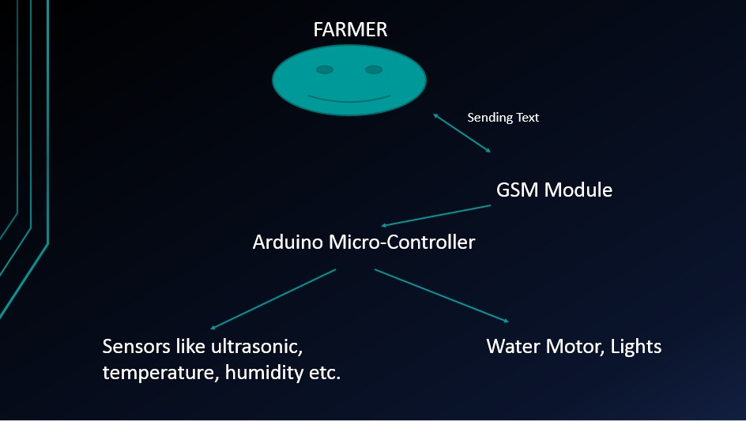

SMART FARM- ELECTRONICS CLUB, IIT GUWAHATI

Just think, life of a hardworking farmer can be made lot more easier and comfortable if he could control his whole farm sitting at his home. So we have come up with a project of farm automation using GSM(Global System for Mobile) module.Using this a farmer can get access to automation even in the absence of internet connection and only a 2G sim is required for this purpose.
Materials Required

- Arduino UNO
- GSM SIM900A
- Breadboard
- LED
- Temperature and humidity sensor
- Resistors
What is GSM?

GSM is a standard developed by the European Telecommunications Standards Institute.It was created to describe the protocols for second generation(2G) digital cellular networks used by mobile phones and is now the default global standard for mobile communications.A GSM module is a chip or a circuit that will establish communication between a mobile device and a GSM system.
Its functions include:
- Read,write and delete SMS messages
- Send SMS messages
- Monitor signal strength
Key Learnings under project:
- Basic Arduino Coding
- Interfacing GSM with arduino
Block Diagram
In the GSM Module, we inserted sim in the sim port.We connect the Rx and Tx pins of the GSM Module to the digital pins numbered 10 & 9 in the arduino respectively.We define the 10 & 9 digital pins as the Tx and Rx of arduino.Moreover we connect the ground of the GSM Module to that of arduino. We power the arduino using a 12-V adapter.
We connect one of the digital pins and the ground of the arduino to LED pins.We also connect the temperature sensor to one of the digital pins.We power the arduino using laptop.
Working
When the farmer sends a message to the mobile number present in GSM module according to the operation desired to the performed ,it receives the SMS and sends it to the arduino. The arduino then performs the desired action according to the code uploaded in it.Thus,the farmer can control various operations of the farm without being physically present at the farm.
Applications
The various applications of the project are:-
- Water level can be controlled using flow meter.
- Temperature and humidity status of the farm can be known.
- Farms are protected using Ultrasonic sensors.
- Farmer is alerted in case there are any intruders.
Future Visions of the Project
- The GSM system can be synchronized with the online database that contains information about the weather update (climatic conditions)and topographical factors of the particular location,and thus can automatically process the need to irrigate the fields(based on the data of probability of rain,humidity and other such factors).
- A pH sensor can be used to used to test the chemical nature of thge soil, and the data so collected can be put together with data from the online database to predict the adequate level of irrigation,correct crop selection for the location.
Team Members
- SOUMITRA DAS
- SOUVIK PAUL
- ADRIRAJ CHOUDHURI
MENTOR: BALBIR SINGH